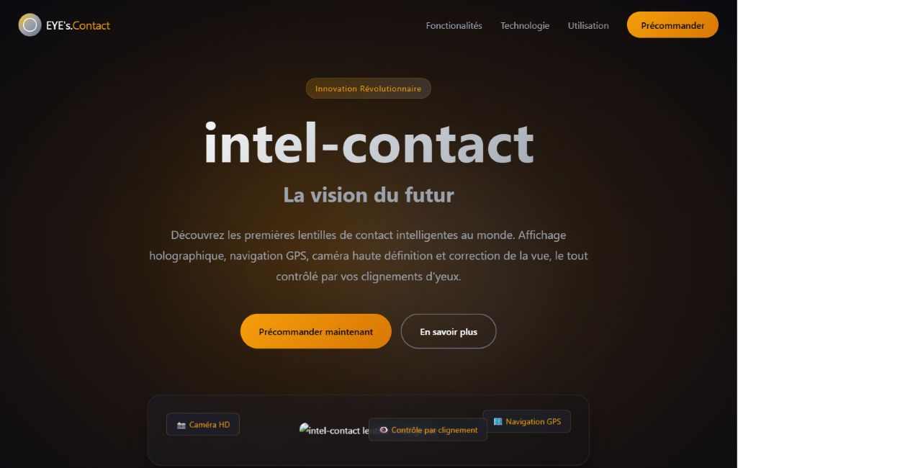

Projet 02 / Formation IPSSI
EYE’s.Contact
Construire une page de présentation autour d’une entreprise fictive et d’un concept de lentilles connectées.
- HTML
- CSS
- GitHub Pages

Le contexte
Un projet de création de site pour une entreprise fictive dans le cadre de la formation à l’IPSSI. Le site présente « intel-contact », un concept imaginaire de lentilles connectées.
Les caractéristiques annoncées dans cette maquette décrivent le produit fictif. Elles ne correspondent pas à des fonctions matérielles développées dans le projet.
Le site réalisé
- Une navigation par ancres entre les différentes sections.
- Une introduction au concept de produit.
- Des sections pour ses caractéristiques et son utilisation.
- Une mise en page avec des grilles, des effets CSS et des boutons de démonstration.
La structure technique
La version du dépôt consultée contient une page index.html et une feuille style.css. Le contenu est écrit directement en HTML. La présentation repose sur les règles CSS.
Aucun script JavaScript n’est chargé dans cette version. Les boutons de précommande utilisent des ancres et ne déclenchent aucun achat.
État de la version consultée
Deux visuels référencés par la page sont absents du dépôt consulté. Certains liens de démonstration ne conduisent pas encore à un contenu dédié.
L’aperçu ci-dessus montre la partie visible de la page. Le dépôt reste accessible pour examiner le code.
Ma contribution
À préciser : projet individuel ou collectif, travail personnel sur la structure, les styles ou d’autres éléments.
Ce que j’en retiens
À compléter avec les difficultés rencontrées et les apprentissages personnels du projet.